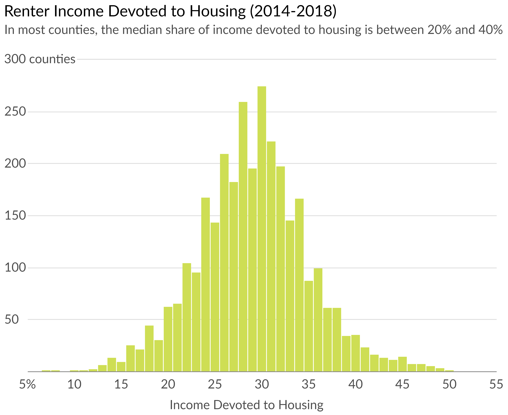
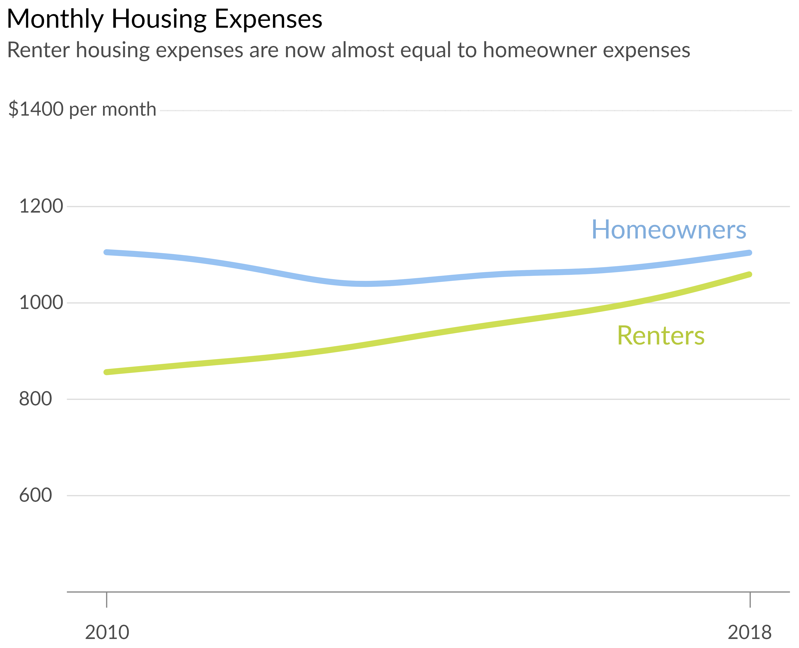

Analyzing the 30% Housing Affordability Rule
This is the first in a series of articles examining issues related to housing affordability.
Article originally published here.
The 30% rule is a housing affordability standard which states that housing expenses should not exceed 30% of household income. This standard was originally outlined in the National Housing Act of 1937 to establish reasonable rent for low-income households (initially 20% of income) and has since become widely accepted as a reliable affordability standard for all housing. While it wasn’t created to serve as a universal measure of affordability, it does provide a useful general guideline for individuals and institutions to lean on. In my analysis below, I dissect this rule and provide some insight into its impact on housing today, specifically with respect to the following topics:
- Differences between renters vs. homeowners
- Regional Trends
- Patterns within different population and housing characteristics
Debt-to-Income Ratio
One manifestation of the 30% rule is the debt-to-income ratio (DTI), which mortgage lenders use to approve loans. They typically require that gross household income not exceed 28% of total housing expenses, including the loan principal, interest, taxes, and insurance (PITI). This upper limit on housing expenses ensures responsible lending and is specifically referred to as the front-end DTI. Although lenders also factor in additional debts when approving loans (e.g. credit card bills, car payments, etc.) I will focus specifically on front-end DTI in my analysis since non-housing related debts vary widely across different household types.
Do Renters Differ From Homeowners?
The 30% rule is still perceived to be common among landlords today. While this may be true, upon examining the data it’s apparent that renters as a group are much more burdened by housing expenses than homeowners despite supposedly being subjected to a similar upper limit. The chart below presents the national median front-end DTI for renters and homeowners from 2008–2018.
*Source: American Community Survey (Census) median housing and income estimates
The following charts present a more zoomed-in view, plotting the distribution of income devoted housing for all US counties.
Source: American Community Survey (Census) 2014–2018 estimates
Source: American Community Survey (Census) 2014–2018 estimates
Homeowners not only devoted less to housing than renters, but the distribution of county medians was also much tighter. Here are a few potential explanations for the disparity between them:
- It seems plausible that landlords don’t enforce the 30% rule on renters as strictly as mortgage lenders do on homeowners. Unlike landlords, mortgage lenders are also incentivized to safeguard against credit risk by the threat of government legal action if they fail to responsibly approve loans.
- Median homeowner household income ($6,500) was almost double that of renter households ($3,400) in 2018, which may indicate that they’re forced to devote more than 30% of their incomes to housing out of necessity.
- Mortgage payments are generally set at a specific amount from the beginning of the loan period, whereas rent payments increase over time. This fact along with the general upward trend of wages means that homeowners become relatively financially stronger over time compared to renters, whose wages are unlikely to rise at a much faster rate than housing expenses.
The chart below presents the change in income relative to housing expenses for homeowners and renters since 2010:
While income growth for both homeowners and renters did outpace housing expense growth, the gap was much wider for homeowners. Another interesting fact is that median housing expenses for both groups are actually not that far apart (plotted below). This might support the third possible explanation outlined above.
*Source: American Community Survey (Census) 2018 median housing and income estimates
Furthermore, despite the large financial gap between these two groups, renter housing expenses are actually higher than homeowner expenses in about 45% of US counties. The map below highlights these counties in yellow (hover & zoom for median figures).
*Source: American Community Survey (Census) 2014–2018 median housing and income estimates
Housing Burden by Region
Plotting the data geographically reveals that the disparity in the relatively greater housing burden for renters is consistent across the country, perhaps with the exception of the central part of the US. The maps below present the median percentage of income renters devoted to housing in each US county.
Renter Income Devoted to Housing
In contrast to renters, median homeowner housing expenses appear to be much more in line with DTI requirements.
Homeowner Income Devoted to Housing
In the next article in this series, I dig into another housing affordability measurement known as the home price-to-income ratio.
This analysis relied on income and housing data retrieved primarily from the US Census Bureau and Zillow. More details can be found in this project’s GitHub repository.
*Note: I will supplement the current version of this analysis with an examination of a few other population and housing characteristics in relation to the 30% rule in the coming days.